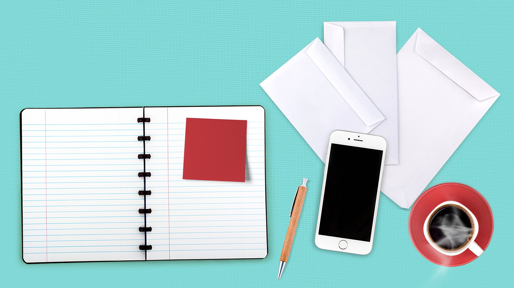

2 / 5

3 / 5

4 / 5
5 / 5
Parallax Demo
Parallax scrolling is a web site trend where the background content is moved at a different speed than the foreground content while scrolling.
Scroll up and down to really get the feeling of how Parallax Scrolling works.
Scroll up and down to really get the feeling of how Parallax Scrolling works.